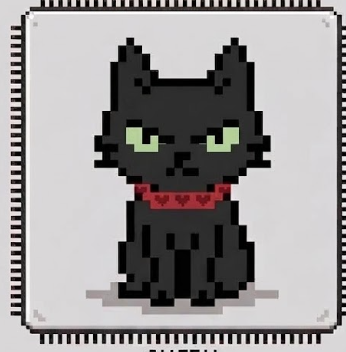

ИНИЦИАЛИЗАЦИЯ КОНТУРА...
ИДЕНТИФИКАЦИЯ ОПЕРАТОРА...
ЗАГРУЗКА РАЗДЕЛОВ...
█
■
SYS_S-A // GATE-01
[ SEC_LVL: 0 ]
ШЛЮЗ ДОСТУПА // РЕЖИМ АВТОРИЗАЦИИ
ВВЕДИТЕ 4-ЗНАЧНЫЙ СЕКРЕТНЫЙ КЛЮЧ
_
_
_
_
ОЖИДАНИЕ ВВОДА ОПЕРАТОРА
ФИКСАЦИЯ НАБЛЮДЕНИЯ // ИСТОЧНИК
[ ПАМЯТЬ ТЕРМИНАЛА ]
Создание личных заметок оператора. Записи хранятся локально в памяти устройства.
ИНЦИДЕНТ [b181]
────────────────────
[ЛАБОРАТОРИЯ СИМБИОНТА]
АВТОНОМНЫЙ БИО-РЕЗЕРВУАР И МИКРОПРОЦЕССОРНЫЙ КОНТУР
[CHIP: CAT-01] b181
||||||||||||||||||||||||||||||||||||||||||||||||

z z Z||||||||||||||||||||||||||||||||||||||||||||||||
СИНХРОНИЗАЦИЯ: 99.4%
АКТИВЕН
РЕВИЗИЯ: v0.7a
Базовый режим наблюдения. Фоновый био-скан.
// МАТРИЦА СОСТОЯНИЙ ЧИПА: